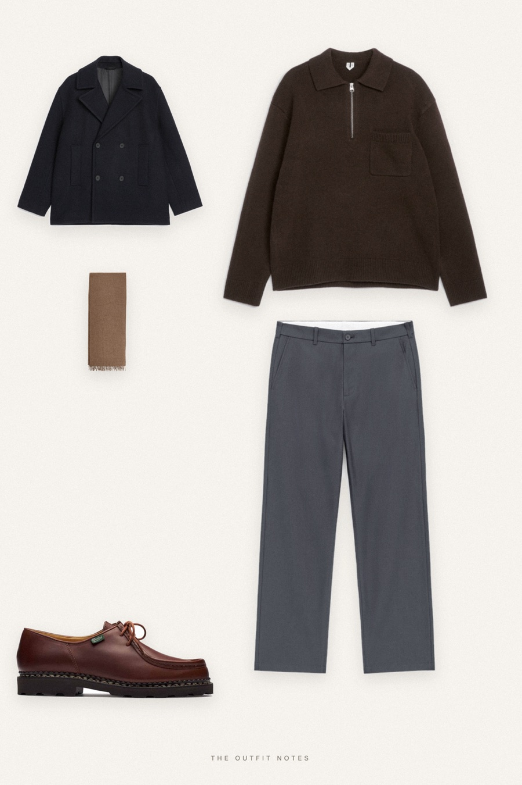
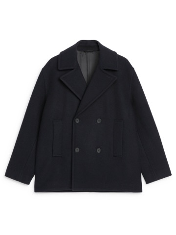

Harbour Navy
pea coat over a brown zip polo

Winter outfit men edition: a navy pea coat over a dark brown ribbed zip polo, with mid-grey relaxed wool-blend trousers that drape to a slight break. Finished with Paraboot Michael derbies and a camel wool scarf. Easy old money style for cold city days, from ARKET and Paraboot.
The pieces
This page contains affiliate links: if you buy through them, we may earn a commission at no extra cost to you. Disclosure.

ARKET
Navy wool pea coat
Shop ARKET
ARKET
Brown knitted zip polo
Shop ARKET
ARKET
Mid-grey relaxed wool-cotton trousers
Shop Paraboot
Paraboot
Brown leather derbies
Shop ARKET
ARKET
Camel wool scarf
Shop
Prices are indicative, taken when the look was published, and may have changed. Pictures of the outfit are AI-generated illustrations of real products; the product photos are the retailers' own.
Published 1 October 2026.